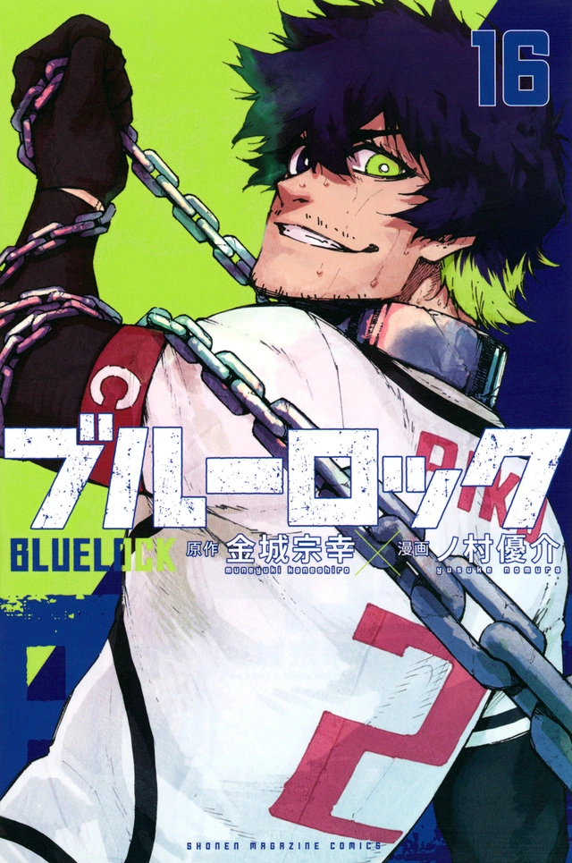
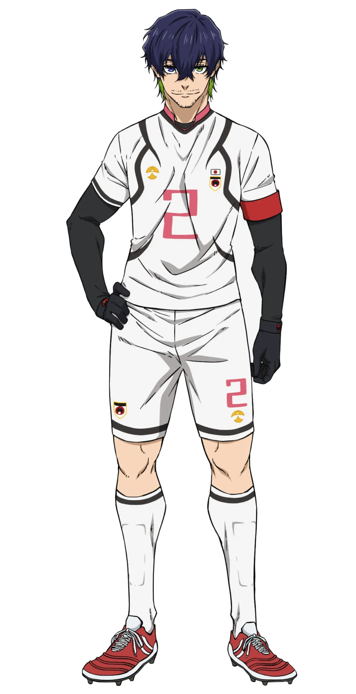

Japanese: オリヴァ 愛空
Rōmaji: Oriva Aiku
Age: 19
Birthday: June 30
Height: 190cm / 6"3
Hair color: Dark purple with lime green tips
Eye color: Green (left eye) Purple (right eye)
Team: Ubers (Italy)
Jersey Numbers: 2 (Japan U-20) / 23 (Ubers)
Position(s): Center Back
Aiku is a very tall and muscular young man with shaggy, dark purple hair with lime green tips and short facial hair. As a child, his facial structure stayed the same, just becoming sharper and more refined as he grew facial hair. Aiku is heterochromatic, and his eyes are different colors, with his left eye being green and his right eye being purple. However, in the anime, his right eye's color was changed to blue.
When Aiku was a child, he wanted to become the best striker in the world, but his coach and other adults tainted his dream with the philosophy of "playing for others." He lost the will to become the best striker in the world in time but decided wholeheartedly to become the best defender in the world to spite all the adults and coaches that told him to play for others and refused to help him pursue his own goals. He promised himself, though, that if a "true striker" ever appears, struggling to bloom in Japan, he will do whatever it takes for them to shine and prevent them from being tainted like he was.
He also tends to repeat things and be semi-self-conscious about his shark-like teeth. That being said, him being quiet does not equal the assumption that he is a rude person, as he is quite nice to those who know him personally. In most situations seen with Kurona, he has never been confrontational and rather seems to carry himself very calmly. He also has the habit of saying a single word twice before actually saying a longer phrase, or simply repeating a word at the end of a sentence.
Aiku lives up to his title as captain as he is the defender and peacekeeper of the Japan U-20 team and its players, as seen when he stops Ryusei Shido from harming their Ace and also keeps their Ace and other members in check with his charisma. Despite his seemingly jovial and friendly manner, Aiku changes dramatically when on the field, becoming a dangerous and highly skilled threat. Aiku can be a bit reckless, for he unnecessarily bet the fate of him and his team for a chance to beat the Blue Lock Eleven properly and prove something to himself. When the first half of the Japan National Representative is over, Aiku apologizes to his team for his recklessness and decides to play their trump card to prevent them from losing. Aiku can also be quite blunt; at halftime during the Japan National Representative match, he states that he wanted to see how strong the team was and tells the team that they're "weak" compared to the talented players at Blue Lock.
Aiku is not above showing his respect for those who have impressed him, as he constantly commented on Blue Lock's ability during the U-20 match and when he congratulated and shook Yoichi Isagi's hand at the end of the match for beating him and scoring an incredible goal. After the game, he seems to have no hard feelings but keeps his competitive nature.